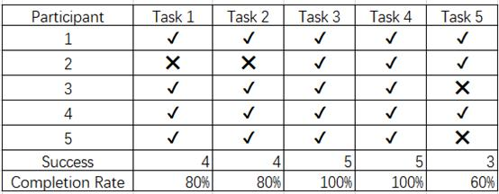
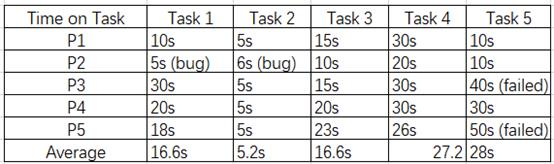
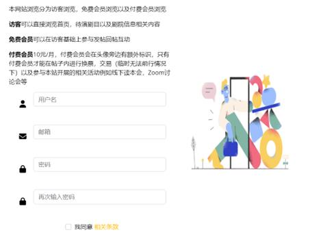
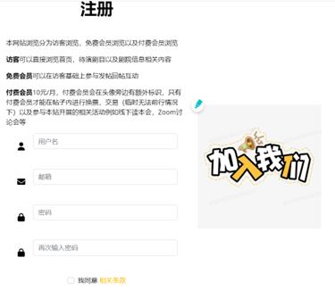

The current project is intended to make a profit from musical drama lovers by providing the group with latest related information, a discussion space and various activities. It serves as a time saver for the target persona since they don’t need to search across multiple platforms to find a group or interact in different private groups of a small size. Considering the size and difficulty, the scope is targeted at Shanghai, the center of musical drama in China. After defining the problem, it is important to do research on the critical functions that will draw constant traffic from the persona in the way of usability tests and interviews.
According to previous interviews, it is found that the most urgent need of this group is to interact with each other to conduct some “group activities” online and offline. In this round, both usability test and AB test are conducted to further explore people’s need in this respect and the critical point to convert them to registered users. In this way, qualitative and quantitative results are gained to have an overall understanding of the project.
In terms of usability test, there are five tests for each participant in the following:
1. Register
2. Login
3. Browse drama info and find one to purchase
4. Write a blog to find someone to watch the drama together
5. Find about musical-related activities
After performing those tasks, several questions are asked:
1. Please use 3 words to describe your experience?
2. What function is most important to you? Do you want to join the membership for the function?
3. What are the possible improvements?
4. The website is going to allow ticket swap / resell in case of emergency and organize offline/online activities, do you think it makes sense that these functions are available for paid members only to guarantee security? Would you join it?
The result is shown as follows:

As can be seen, besides the failure of P2 due to some bugs. All the tasks are completed by all participants except Task 5. It is also the task that takes the most time to finish on average because there is not a separate section covering related activities. Task 4 has taken the second longest time to finish on average because it takes time for people to think about blog contents and view blogs.
After the test, most participants declare that they are willing to register and pay for extra functions at an acceptable price. Several suggestions are also given including the flash display, categorization of blogs, more details about dramas. More detailed analysis could be found in the result report.
In terms of AB test, the objective is to see if the design of the signup page will influence the conversion and people’s decision to register. At first, the register page is simple with a picture from the borrowed template. Learning from another course which talks about the AB test conducted in Obama’s campaign, any change in the layout may somehow increase or reduce the conversion, I decide to replace the picture with another one to see if it works in my website.
The original version with the template picture
The variant version with a more call-to-action picture
Combing the results, several adjustments are expected to be done to better serve this group. Since the interaction part is the most valuable and indispensable part, it is essential to pay more attention to it and seek more opinions about it constantly in the future.
The detailed information is available here.